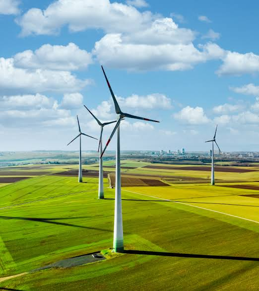

02 / MID · یادداشت Energy Notes
انرژی تجدیدپذیر؛ چرا سهم کافی مهم است؟
روایتی از پژوهشی روی ۲۷ کشور اتحادیهٔ اروپا که نشان میدهد انرژی تجدیدپذیر تنوع سبد انرژی و ریسک ژئوپلیتیک را کاهش میدهد، اما برای کاهش وابستگی وارداتی باید به مقیاس و بلوغ کافی برسد.

باد همیشه به معنی استقلال نیست
توربینهای بادی در تصویر، نشانهای ساده از گذار انرژیاند: تولید برق از منبعی که در داخل مرزها در دسترس است و مانند نفت و گاز به یک مسیر وارداتی مشخص وابسته نیست. اما یک پرسش مهم باقی میماند: آیا نصب توربین و پنل، بهتنهایی وابستگی انرژی را کم میکند؟
مقالهٔ «The rise of renewable energy» نوشتهٔ سلیمان محمد، کریستین هافمن و فلیکس موسگنز، همین پرسش را برای ۲۷ کشور اتحادیهٔ اروپا در فاصلهٔ ۲۰۱۰ تا ۲۰۲۲ بررسی میکند. نویسندگان امنیت انرژی را یک عدد واحد نمیگیرند. آنها سه مسیر متفاوت را جدا میکنند: وابستگی به انرژی خارجی، تنوع سبد انرژی و ریسک ژئوپلیتیکِ تأمینکنندگان.
نتیجهٔ کلی در نگاه اول ساده است: انرژی تجدیدپذیر تنوع سبد و ریسک ژئوپلیتیک را کاهش میدهد، اما در برآورد پایه اثر معناداری بر وابستگی وارداتی دیده نمیشود. وقتی رابطه غیرخطی بررسی میشود، تصویر دقیقتری به دست میآید. تجدیدپذیرها برای کمکردن وابستگی به یک مقیاس و بلوغ کافی نیاز دارند.
امنیت انرژی فقط یک سؤال ندارد
شاخص نخست، ریسک وابستگی انرژی است. این شاخص نشان میدهد یک کشور برای تأمین انرژی خود تا چه حد به خالص واردات تکیه دارد. هرچه سهم واردات خالص در انرژی در دسترس بیشتر باشد، ریسک وابستگی هم بالاتر میرود.
شاخص دوم، ریسک تنوع انرژی است. نویسندگان برای سنجش تمرکز سبد از شاخص هرفیندال–هیرشمن استفاده میکنند. مقدار بالاتر یعنی تکیهٔ بیشتر بر چند منبع محدود؛ مقدار پایینتر یعنی سبد متنوعتر و ریسک تمرکز کمتر. بنابراین افزایش انرژی تجدیدپذیر میتواند حتی پیش از آنکه واردات را بهطور محسوسی پایین بیاورد، ساختار سبد را متعادلتر کند.
شاخص سوم، ریسک ژئوپلیتیک است. این شاخص فقط به مقدار واردات نگاه نمیکند؛ سهم هر تأمینکننده را با ریسک سیاسی و نهادی همان کشور ترکیب میکند. به زبان ساده، وابستگی به دو فروشندهٔ متفاوت، اگر یکی از آنها در معرض بیثباتی بیشتری باشد، الزاماً یک ریسک یکسان ایجاد نمیکند. البته این شاخص یک سنجهٔ کلان است و جزئیات قراردادهای بلندمدت، مسیرهای حمل یا اختلافهای درون هر کشور را کامل نشان نمیدهد.
این تفکیک مهم است. ممکن است یک سیاست، ریسک ژئوپلیتیک را کم کند اما هنوز مقدار واردات را بهاندازهای پایین نیاورده باشد که در شاخص وابستگی دیده شود. وقتی همهٔ اینها با عنوان کلی «امنیت انرژی» جمع شوند، تفاوت میان آنها پنهان میماند.
تجدیدپذیرها ابتدا ترکیب سبد را تغییر میدهند
در مدل پایهٔ مقاله، افزایش سهم تجدیدپذیرها با کاهش معنادار ریسک تنوع انرژی همراه است. این نتیجه به این معنا نیست که هر کشور حتماً مجموعهای بزرگ از باد، خورشید، آب و زیستتوده ساخته است. معنای دقیقتر آن این است که سهم منابع سنتی در ترکیب انرژی کمتر مسلط میشود و سیستم از تمرکز شدید روی چند منبع فاصله میگیرد.
ریسک ژئوپلیتیک نیز در همین برآورد با افزایش تجدیدپذیرها کاهش مییابد. بخشی از تولید باد، خورشید و آب در داخل کشور انجام میشود و به همان اندازه در معرض تصمیم سیاسی یک تأمینکنندهٔ خارجی، یک خط لوله یا یک مسیر دریایی نیست. این تغییر، آسیبپذیری در برابر فشار سیاسی، اختلال عرضه و نوسان بازارهای جهانی را محدود میکند.
این یافته با بحث گذار انرژی و جابهجایی نقشهٔ قدرت همجهت است، اما یک تفاوت دارد. این مقاله بهجای تمرکز بر فناوری و رقابت صنعتی، میپرسد افزایش واقعی تولید تجدیدپذیر در سطح کشور چه اثری بر سه نوع ریسک انرژی میگذارد.
چرا وابستگی وارداتی فوراً کم نمیشود؟
در مدل خطی، اثر انرژی تجدیدپذیر بر ریسک وابستگی انرژی از نظر آماری معنادار نیست. این نتیجه در نگاه اول با تصور رایج فاصله دارد: اگر باد و خورشید داخلیاند، چرا واردات فوراً کمتر نمیشود؟
نویسندگان چند توضیح را کنار هم میگذارند. ظرفیتهای تجدیدپذیر معمولاً در آغاز به سبد موجود اضافه میشوند، نه اینکه همان لحظه جای بخش بزرگی از سوختهای وارداتی را بگیرند. برق بادی و خورشیدی نوسان دارد و برای حفظ پایداری شبکه به ظرفیت انعطافپذیر و پشتیبان نیاز پیدا میکند. در بسیاری از کشورهای اروپایی، بخشی از این پشتیبان با سوختهای فسیلی، بهویژه گاز طبیعی، فراهم میشود.
در نتیجه، یک کشور ممکن است همزمان ظرفیت تجدیدپذیر خود را بالا ببرد و هنوز برای پشتیبانی از شبکه یا پوشش تقاضای رو به رشد به واردات نیاز داشته باشد. حتی ممکن است در مرحلهٔ اولیه، مصرف سوخت پشتیبان افزایش یابد. بنابراین «تجدیدپذیر بیشتر» و «واردات کمتر» دو اتفاق همزمان و خودکار نیستند؛ میان آنها شبکه، ذخیرهسازی، مدیریت تقاضا و اندازهٔ سیستم قرار دارد.
اثر اصلی پس از عبور از یک آستانه دیده میشود
برای آزمودن این احتمال، مقاله یک جملهٔ درجهٔ دوم به مدل اضافه میکند. نتیجه برای ریسک وابستگی انرژی به شکل یک رابطهٔ U وارونه ظاهر میشود: در سطوح پایینتر توسعه، افزایش تجدیدپذیرها لزوماً وابستگی را کم نمیکند و حتی میتواند در بعضی مراحل با افزایش آن همراه شود؛ پس از رسیدن به سطحی کافی، اثر جایگزینی قویتر میشود و وابستگی به انرژی خارجی کاهش مییابد.
این «آستانه» در مقاله یک عدد ثابت و قابل کپی برای همهٔ کشورها نیست. نقطهٔ تغییر به اندازهٔ سیستم، ترکیب منابع، ظرفیت شبکه، امکان ذخیرهسازی، رشد تقاضا و مقدار سوخت پشتیبان بستگی دارد. ارزش نتیجه در خودِ عدد نیست؛ در نشاندادن این است که رابطهٔ تجدیدپذیر و استقلال انرژی خطی و یکمرحلهای نیست.
نویسندگان برای ریسک تنوع و ریسک ژئوپلیتیک، رابطهٔ غیرخطی معناداری پیدا نمیکنند. این دو ریسک در مدل پایه هم با افزایش تجدیدپذیرها کاهش یافته بودند. بنابراین ممکن است اثر امنیتی تجدیدپذیرها در این دو مسیر زودتر ظاهر شود، درحالیکه کاهش وابستگی وارداتی به استقرار گستردهتر و هماهنگی بیشتر میان تولید، شبکه و تقاضا نیاز دارد.
نتیجه فقط به یک مدل وابسته نیست
مقاله برای سنجش استحکام نتیجهها چند بررسی اضافه انجام میدهد. در یک برآورد، نویسندگان از روش حداقل مربعات دومرحلهای و مقادیر وقفهدار تجدیدپذیرها بهعنوان ابزار استفاده میکنند تا نگرانی دربارهٔ رابطهٔ دوسویه و علیت معکوس را کاهش دهند. بررسیهای تشخیصی نیز در متن مقاله برای قدرت و اعتبار ابزارها گزارش شدهاند.
در آزمون دیگری، بهجای سهم تجدیدپذیرها در مصرف نهایی، نرخ رشد مصرف انرژی تجدیدپذیر وارد مدل میشود. نتیجهٔ کلی با مدل پایه همخوان است: رشد تجدیدپذیرها ریسک تنوع و ریسک ژئوپلیتیک را پایین میآورد، اما اثر آن بر ریسک وابستگی انرژی همچنان معنادار نیست.
حذف سال ۲۰۲۲ نیز داستان اصلی را عوض نمیکند. اثر کاهنده بر تنوع و ریسک ژئوپلیتیک باقی میماند و اثر بر وابستگی وارداتی معنادار نمیشود. افزودن متغیرهای کیفیت دولت، کیفیت مقررات و آزادسازی بازار انرژی هم نتیجهٔ اصلی را جابهجا نمیکند. این آزمونها به معنی بینقصبودن مدل نیستند، اما نشان میدهند که یافتهٔ مقاله فقط محصول شوک انرژی سال ۲۰۲۲ نیست.
سه تصمیم برای سیاست انرژی
پیام سیاستی اول، سرعتدادن به توسعه در کشورهایی است که هنوز سهم تجدیدپذیر پایینی دارند. اگر مزیت امنیتی پس از یک سطح کافی آشکار میشود، رشد آهسته و پراکنده ممکن است سالها طول بکشد تا اثر خود را بر واردات نشان دهد. بااینحال، شتاب بهتنهایی کافی نیست؛ ظرفیت جدید باید به شبکه و الگوی مصرف متصل شود.
پیام دوم، تنوعدادن به خودِ سبد تجدیدپذیرهاست. جایگزینکردن وابستگی به یک منبع فسیلی با وابستگی شدید به یک فناوری یا یک الگوی تولید، ریسک را از بین نمیبرد. مقاله از ترکیب باد، خورشید، آب و زیستتوده، در کنار ذخیرهسازی و اتصال میان بخشهای مختلف انرژی، بهعنوان مسیر کاهش تمرکز یاد میکند.
پیام سوم، تقویت شبکه و همکاری منطقهای است. اتصال میان کشورها میتواند انعطاف شبکه را بالا ببرد و اجازه دهد مازاد تولید در یک نقطه، نوسان یا کمبود نقطهای دیگر را جبران کند. اینجا امنیت انرژی فقط به تعداد نیروگاهها مربوط نیست؛ به کیفیت شبکه، امکان تبادل و توان هماهنگکردن تصمیمها هم وابسته است.
این نگاه به بحث تابآوری اقتصادی در برابر شوکهای انرژی نزدیک میشود. تولید داخلی یک سپر مهم است، اما تنها زمانی به تابآوری تبدیل میشود که زیرساخت، بازار و ظرفیت مدیریت شوک هم همراه آن باشند.
این مقاله چه چیزی را ادعا نمیکند؟
مقاله نمیگوید هر نیروگاه بادی یا خورشیدی فوراً استقلال انرژی میآورد. همچنین یک نسخهٔ عددی برای همهٔ کشورها ارائه نمیکند و نتیجهٔ اتحادیهٔ اروپا در سالهای ۲۰۱۰ تا ۲۰۲۲ را نمیتوان بدون بررسی نهادی و زیرساختی به ایران یا هر اقتصاد دیگری منتقل کرد.
محدودیت دیگر به خودِ سنجهٔ ریسک ژئوپلیتیک برمیگردد. این شاخص با ریسک کشور تأمینکننده و سهم واردات ساخته شده است؛ بنابراین ویژگیهای درون کشور، ساختار قراردادهای بلندمدت و جزئیات رابطهٔ خریدار و فروشنده را کامل نمیبیند. دادهها نیز فقط تا سال ۲۰۲۲ را پوشش میدهند.
با این احتیاط، پیام مقاله ارزشمند میماند: تجدیدپذیرها پیش از آنکه بهطور کامل جای واردات را بگیرند، میتوانند سبد انرژی را متنوعتر و تماس کشور با ریسکهای بیرونی را کمتر کنند. اما برای استقلال وارداتی، «داشتن ظرفیت» کافی نیست. ظرفیت باید به اندازهای برسد که بتواند بخشی معنادار از سوختهای وارداتی را جایگزین کند و در کنار آن، شبکه و ذخیرهسازی هم از این جایگزینی پشتیبانی کنند.
پس سؤال درست فقط این نیست که چه مقدار انرژی تجدیدپذیر ساختهایم. باید پرسید این انرژی در کجای سیستم نشسته، چه چیزی را واقعاً جایگزین کرده و آیا به مقیاسی رسیده است که امنیت انرژی را از یک وعدهٔ سیاسی به یک توان عملیاتی تبدیل کند.
منابع این روایت
- The rise of renewable energy: How it shapes dependency, diversity, and geopolitical risk in the European Union Energy Policy / Elsevier · paper